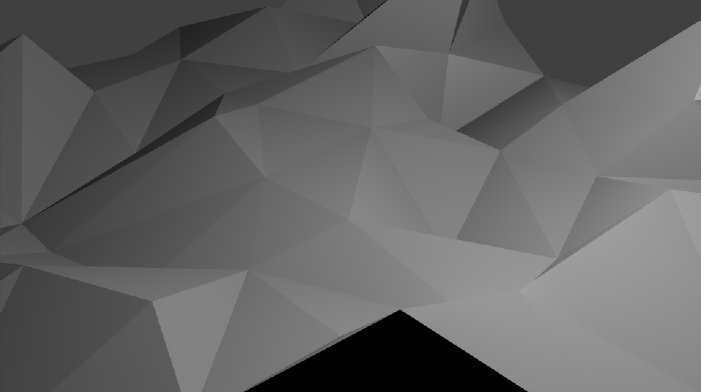
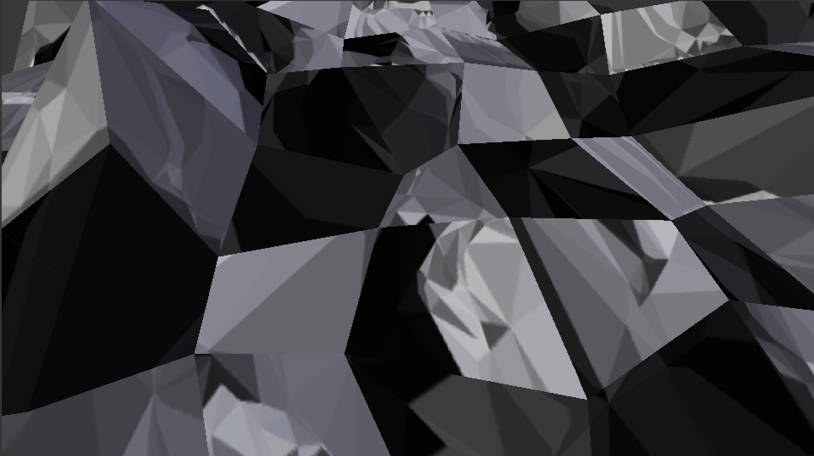
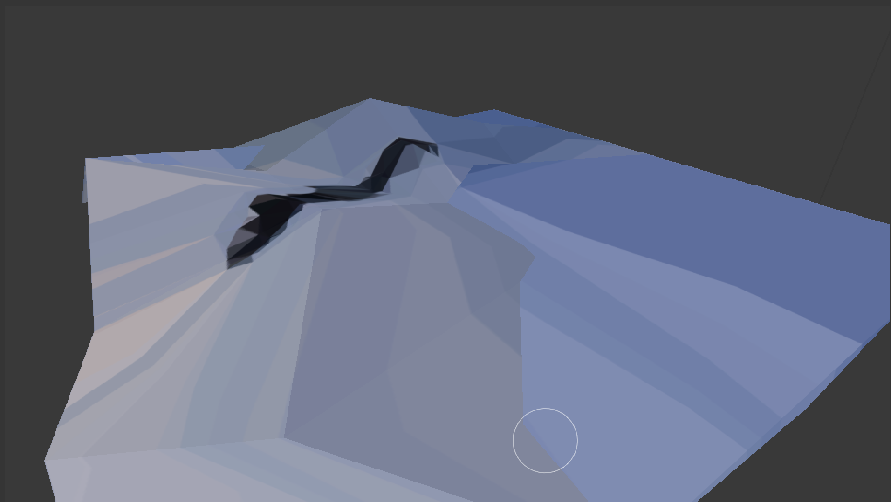
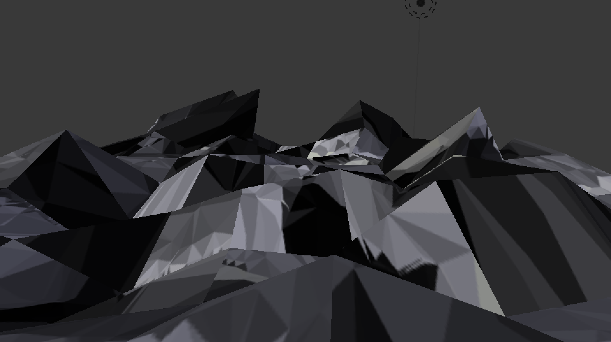

Yuran SHEN
  
Ces cuisines sont faites par l'inscape et le dmesh, mélangées avec blender.
Faire un dessin de forme triangulaire par l'inscape, transferer à dmesh.
Et puis, créer une surface plane dans blender, coller l'image sur la surface.
La dernière étape consiste à déformer la surface avec blender !
